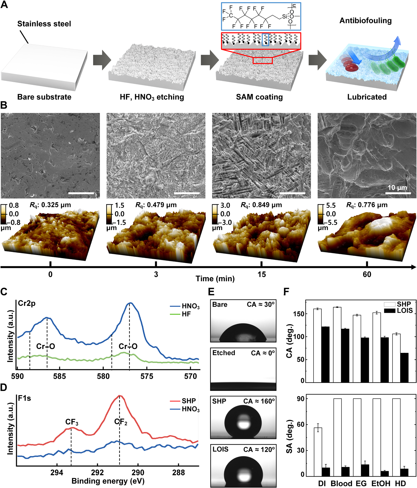

Overview
This study, by researchers at the BLISS Lab (Jungmok Seo) at Yonsei University and the Department of Orthopedic Surgery at Korea University Anam Hospital, introduced a lubricated orthopedic implant surface (LOIS) that holds a perfluoropolyether lubricant in micro/nanostructures etched into stainless-steel plates and screws. In a rabbit femoral fracture model with implants preincubated in methicillin-resistant Staphylococcus aureus (MRSA), six of six rabbits with bare implants became infected, while none with LOIS-treated implants did.
Background
Bacterial adhesion and biofilm formation on orthopedic implants cause surgical site infection that is difficult to treat with antibiotics and often requires removal of the implant and surrounding tissue. Drug-eluting implants have been reported to damage surrounding tissue over long implantation and have limited drug-loading capacity, zwitterionic antibiofouling polymers lack long-term stability and resistance to the scratching that occurs during surgery, and biodegradable implants degrade nonuniformly. Superhydrophobic (SHP) surfaces repel bacteria with trapped air, but the air pockets dissolve and the large textured area can then increase bacterial adhesion.
Design and approach
LOIS is made in four steps on medical-grade 304 stainless steel: hydrofluoric acid (HF) etching forms micro/nano-hierarchical roughness, nitric acid passivation restores a chromium oxide layer for corrosion resistance, a fluorinated self-assembled monolayer (SAM) of 1H,1H,2H,2H-perfluorooctyltriethoxysilane (POTS) lowers surface energy, and a perfluoropolyether lubricant (Krytox 101) is infused. The authors explain that etching for less than 10 min yields only nanoscale roughness that holds too little lubricant, whereas etching beyond 30 min removes the nanoscale roughness; among the etching times characterized, 15 min gave the lowest sliding angle (SA) and was adopted. The dual-scale roughness raises capillary force so that lubricant flows back into damaged areas.

Original paper figure showing LOIS surface-treatment stages, microstructure, surface chemistry and wetting characterization. A presents fabrication, B SEM/AFM observations, C–D XPS analyses, and E–F droplet observations and contact/sliding-angle comparisons.
Kyomin Chae, Woo Young Jang, Kijun Park et al. “Antibacterial infection and immune-evasive coating for orthopedic implants”. Figure 2. DOI: 10.1126/sciadv.abb0025. © 2020 The Authors. CC BY-NC 4.0. Source: NLM/PMC Article Datasets. Figure dimensions, panels and labels are unchanged.
Source figure and caption ↗ · DOI: 10.1126/sciadv.abb0025 ↗ · CC BY-NC 4.0 ↗
Noncommercial academic use requires author/source attribution, the license link and disclosure of changes.
How it was evaluated
SHP and LOIS were compared by contact angle and SA with water, blood, ethylene glycol, ethanol and hexadecane, and bare, etched, SHP and LOIS substrates by adhesion of Pseudomonas aeruginosa and MRSA after 12 and 72 hours, albumin, fibrinogen, fibroblasts, macrophages and calcium. Mechanical effects were assessed by nanoindentation, by ex vivo implantation of plates and screws into rabbit femurs followed by blood and albumin adhesion tests, and by three-point bending. In vivo, 24 male New Zealand white rabbits were divided into four groups (n = 6 each): sterile bare implants (bare negative), and bare (bare positive), SHP and LOIS implants preincubated for 12 hours in MRSA at 10⁶ CFU/ml. The authors chose preincubation rather than injection of bacteria to produce consistent biofilm on the implant. Outcomes after 4 weeks included infection, hematoxylin and eosin (H&E) and Masson's trichrome histology, immunohistochemistry for tumor necrosis factor-α (TNF-α) and interleukin-6 (IL-6), x-ray, micro-computed tomography (micro-CT) of callus and tartrate-resistant acid phosphatase (TRAP) staining of osteoclasts.
Key results
Water, blood, ethylene glycol, ethanol and hexadecane all rolled off LOIS at tilt angles below 10° to 15°, whereas every liquid except water adhered to the SHP surface. The coating was also applied to titanium, polyphenylsulfone, polyoxymethylene, polyetheretherketone and poly(lactic-co-glycolic acid). After 12 hours, etched and SHP surfaces carried approximately 25 to 50% less bacterial adherence than bare steel, but SHP lost this advantage by 72 hours; LOIS showed no biofilm adherence at either time point, and the introduction summarizes in vitro attachment on LOIS as less than 1%. In a reflection confocal test on lubricant-infused, SAM-coated glass, the lubricant layer persisted after 120 hours of shaking at 120 rpm in phosphate-buffered saline, and LOIS reduced adhesion of proteins, cells and calcium compared with the other substrates.
Nanoindentation reached a maximum depth of 0.26 μm on bare steel and 1.61 μm on LOIS, which the authors attribute to the micro/nanostructure. After ex vivo implantation damaged the plates near the screw holes, SHP lost its blood repellency while LOIS still repelled blood; albumin covered the damaged SHP plates at about half the area of bare plates, whereas LOIS showed no adhesion. On screws, LOIS bound few or no proteins, while SHP screws had one-third the coverage of bare screws. Young's modulus was 41.48 ± 1.01 GPa for bare and 40.06 ± 0.96 GPa for the coated substrate, a difference of approximately 3.4%, above the 7.4 to 31.6 GPa reported for human cortical bone. Flexural strength was approximately 5.3% higher for the bare substrate; the text and Figure 4L legend label the comparison group as SHP.
In the fracture model, rabbits with bare-positive implants showed serious inflammation at 4 weeks, with abscess and necrosis on H&E staining and a persistent osteolytic line on x-ray, whereas tissues around LOIS implants showed no signs of infection and the fracture appeared healed. SHP implants also produced infection-associated inflammation. Immunohistochemistry showed slightly lower TNF-α and clearly lower IL-6 expression around LOIS than around sterile bare-negative implants, with the quantified difference marked at P < 0.01 in Fig. 5G, which the authors interpret as reduced foreign body response in addition to infection prevention.
Micro-CT showed only small amounts of callus in the bare-positive and SHP groups and a thick callus in the bare-negative and LOIS groups, and quantified callus formation was significantly higher in the bare-negative and LOIS groups than in the others. Osteoclast recruitment at the screw-bone interface was similar for bare and LOIS implants. In an additional comparison of two rabbits (bare negative and LOIS) at 6 weeks, x-ray showed no persistent osteolytic line in either.
Open questions
The authors state that infection reaching the implant after implantation was not modeled and that a new in vivo model is needed to study it. They also note that osteoinduction remains an unmet challenge and propose integrating selective adhesion of osteoinductive cells or regenerative approaches with LOIS.
Related research
Bioinspired self-repairing slippery surfaces with pressure-stable omniphobicity
SLIPS holds a lubricating liquid in a porous solid, inspired by the Nepenthes pitcher plant, to repel liquids and recover after damage; LOIS applies this principle to stainless-steel fixation plates and screws and tests it against surgical damage and bacterial infection in rabbits.
Abstract-based introductionRESEARCH NEWS
Research in the news
Sources used in this summary
This summary is based on the full text and figure legends of the open-access article (PMC7608784); the Supplementary Materials were not reviewed, and group labels that differ within the text (SHP in the flexural strength comparison; bare positive in the osteoclast and 6-week descriptions) are reported as written or omitted.